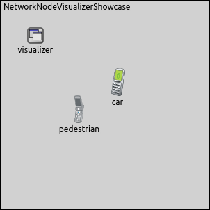
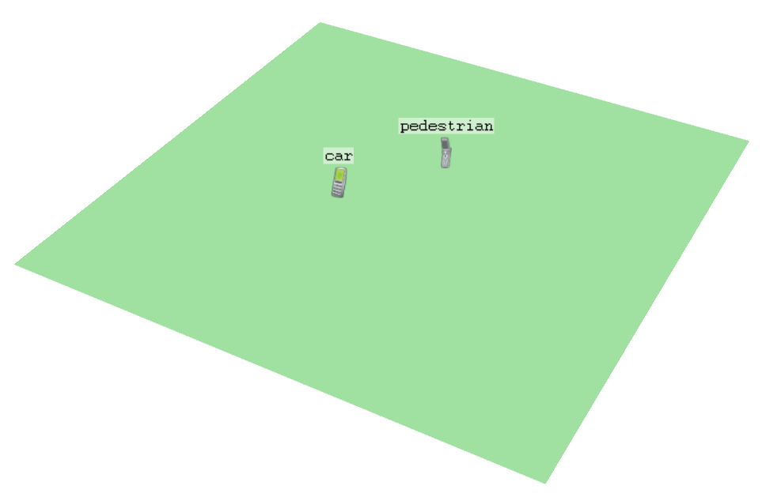

In simulations it is important to customize the appearance of nodes e.g customize their size or color. In a complex network with many nodes we need to distinguish between the nodes e.g based on their function or location.
In INET the default 3D visualization of nodes is a two dimensional icon. However, a 3D model depicts the nodes better in a real world context. It also fits better in the 3D environment.
In this showcase we demonstrate how to visualize network nodes in the simulation and we present some important features of the visualization.
INET version: 3.6
Source files location: inet/showcases/visualization/networknode
The NetworkNodeVisualizer module (included in the network as part of IntegratedVisualizer) can display the nodes on the playground. By using NetworkNodeVisualizer module, we can customize the look of the nodes in 2D and 3D visualization too. Each nodes are represented by a 3D model or a 2D icon.
We can specify the 2D icon image by the display string of the node. In the display string we adjust the i tag. This tag defines the path, the color and the colorization of the icon.
The 3D model is specified by the osgModel parameter.
The color of the three dimensional model can be customized by the osgModelColor parameter.
We can scale, rotate and translate the node by parameterizing the osgModel.
Here are some examples:
By default the name of the module is displayed, but it is possible to hide it by setting the displayModuleName parameter to false.
This example demonstrates some network node visualization features. This simulation can be run by choosing the VisualizingNodes configuration from the ini file.
The network consists of two AdhocHosts (pedestrian and car). The visualizer's type is IntegratedVisualizer. In the network there is no communication, so we turn off the configuration of the node's network layer. In the ned file we modify the i tag of the display string to change the 2D icon of the pedestrian. We can change the icon's color by setting the second parameter of the i tag.
Here is the 2D visualization:
Without customizing network node visualization, a two dimensional mobile phone icon represents each nodes in 3D view:
We replace the nodes' icon with a 3D model by using the below configuration:
Here is the result of these settings:
This configuration has no effect on the 2D visualization, it overwrites only the 3D settings. The pedestrian is represented by an animated walking boxman and the car is represented by a car model instead of a 2D cellphone icon. The 3D models make the nodes recognizable even without displaying the module's name.

This example only demonstrated the key features of network node visualization. For more information, refer to the NetworkNodeVisualizer NED documentation.